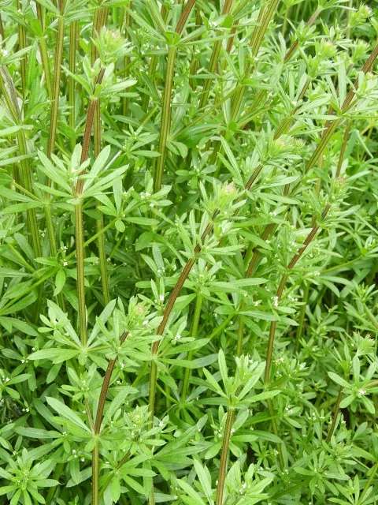

Ayuntamiento de Senés
JARDIN BOTANICO DE ESPECIES AUTOCTONAS DE SENES

Galium aparine

El amor del hortelano (Galium aparine) es una planta herbácea anual muy común en campos, huertos y zonas húmedas del ámbito mediterráneo. Se caracteriza por su capacidad para adherirse a otras plantas, ropa o animales gracias a sus diminutos ganchos.
Presenta tallos largos, delgados y trepadores, que pueden alcanzar más de un metro de longitud. Sus hojas son estrechas y se disponen en verticilos alrededor del tallo. Sus pequeñas flores blancas pasan desapercibidas, pero dan lugar a frutos cubiertos de diminutas estructuras adherentes.
El amor del hortelano se distribuye ampliamente por Europa, Asia y otras regiones templadas, creciendo en suelos ricos en nutrientes y con cierta humedad.
En la Sierra de los Filabres y en el entorno de Senés, es frecuente en huertos, bordes de caminos y zonas agrícolas, especialmente en primavera, donde puede crecer de forma abundante.
El amor del hortelano ha sido utilizado en medicina tradicional por sus propiedades diuréticas y depurativas. Se ha empleado en infusiones para favorecer la eliminación de líquidos y limpiar el organismo.
También se le han atribuido propiedades calmantes y beneficiosas para la piel en aplicaciones externas.
El amor del hortelano simboliza la persistencia y la adaptación, debido a su capacidad para adherirse y expandirse en diferentes entornos.
Su nombre popular refleja su relación con el entorno agrícola y su presencia constante en huertos y cultivos.
En la Sierra de los Filabres y en el entorno de Senés, era frecuente en huertos, bordes de caminos y zonas agrícolas, especialmente en primavera, en la actualidad por la falta de lluvia es difícil encontrarlo en la jurisdicción de senés
Se utilizaba para la cistitis y dolores de piedra. La mata no se le podía dar de comer a los conejos ya que por ser tan pegajosa se les adheria al intestino, no podían defecar y morían.
El amor del hortelano florece en primavera, produciendo pequeñas flores blancas que posteriormente dan lugar a frutos adherentes.
Los frutos del amor del hortelano están cubiertos de diminutos ganchos que le permiten adherirse fácilmente a animales y personas, facilitando su dispersión.
Es una planta considerada a menudo como “mala hierba”, aunque posee propiedades útiles y forma parte importante del ecosistema.